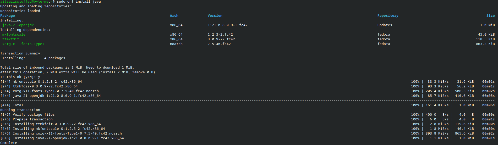

The following website is for Introductory Java that shall be professionally used to make softwares and research work in Java. Most of my work will have background in Mathematics or tools to run or power applications in this certain work. As such, the content hosted on this site would be used for my Java practice for Cambridge International A Level Computer Science.
This site would broadly cover fundamentals of Java, with promoting an introspective framework for mathematical reasoning and producing working implementations of theoretical and real-life world problems.
There will be other compilations of work in Java referenced on the website. For this page however, we will set up Java. There are many different set-ups to do so, but I'll implement and show my setup here.
.',;::::;,'. aitzazisstuffed@byte-me
.';:cccccccccccc:;,. -----------------------
.;cccccccccccccccccccccc;. OS: Fedora Linux 42 (KDE Plasma Desktop Edition) x86_64
.:cccccccccccccccccccccccccc:. Host: 83ER (IdeaPad Slim 3 15IAH8)
.;ccccccccccccc;.:dddl:.;ccccccc;. Kernel: Linux 6.15.8-200.fc42.x86_64
.:ccccccccccccc;OWMKOOXMWd;ccccccc:. Uptime: 1 day, 8 hours, 26 mins
.:ccccccccccccc;KMMc;cc;xMMc;ccccccc:. Packages: 2749 (rpm), 13 (flatpak), 8 (snap)
,cccccccccccccc;MMM.;cc;;WW:;cccccccc, Shell: bash 5.2.37
:cccccccccccccc;MMM.;cccccccccccccccc: Display (CMN1552): 1920x1080 @ 60 Hz in 16" [Built-in]
:ccccccc;oxOOOo;MMM000k.;cccccccccccc: DE: KDE Plasma 6.4.3
cccccc;0MMKxdd:;MMMkddc.;cccccccccccc; WM: KWin (Wayland)
ccccc;XMO';cccc;MMM.;cccccccccccccccc' WM Theme: Breeze
ccccc;MMo;ccccc;MMW.;ccccccccccccccc; Theme: Breeze (Light) [Qt], Breeze [GTK3]
ccccc;0MNc.ccc.xMMd;ccccccccccccccc; Icons: Tela-purple-dark [Qt], Tela-purple-dark [GTK3/4]
cccccc;dNMWXXXWM0:;cccccccccccccc:, Font: Noto Sans (10pt) [Qt], Noto Sans (10pt) [GTK3/4]
cccccccc;.:odl:.;cccccccccccccc:,. Cursor: breeze (24px)
ccccccccccccccccccccccccccccc:'. Terminal: konsole 25.4.3
:ccccccccccccccccccccccc:;,.. CPU: 12th Gen Intel(R) Core(TM) i5-12450H (12) @ 3.30 GHz
':cccccccccccccccc::;,. GPU: Intel UHD Graphics @ 1.20 GHz [Integrated]
Memory: 4.89 GiB / 15.31 GiB (32%)
Swap: 0 B / 8.00 GiB (0%)
Disk (/): 32.97 GiB / 475.35 GiB (7%) - btrfs
Locale: en_US.UTF-8
Begin by installing and configuring the setup for Flatpak. After doing so, download Java from your command-line.

After setting up Java as a runnable command, go to discover and search for Netbeans, and install it.